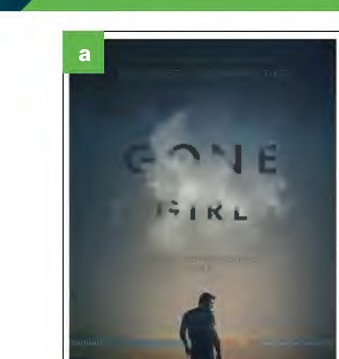
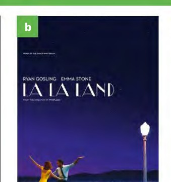
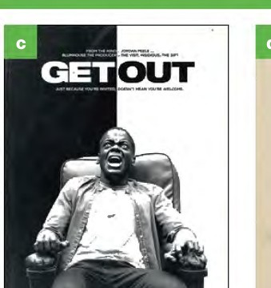
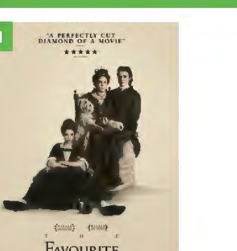
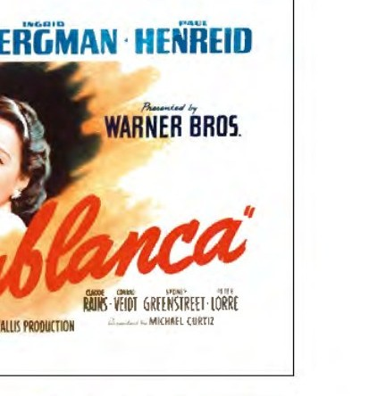
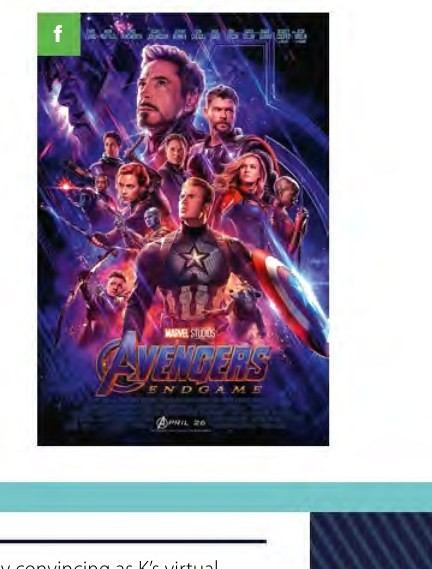
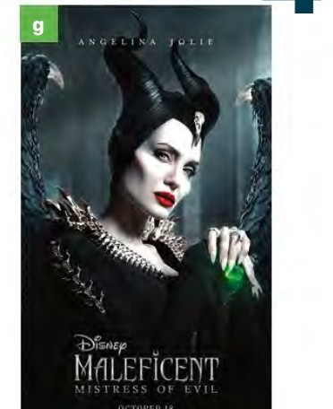
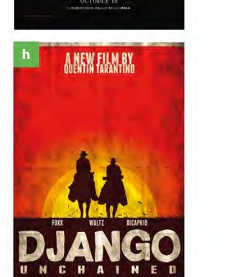
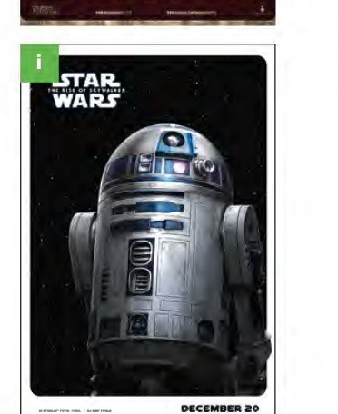
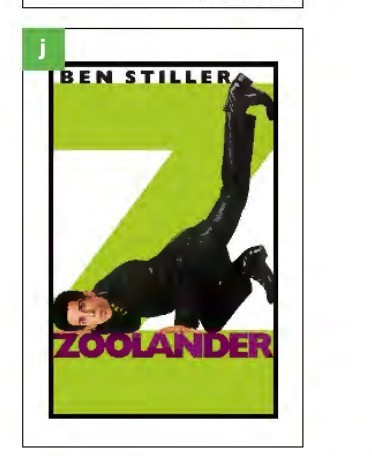

Click a genre, then click the slot next to a poster. Keys from the Teacher’s Book.

a

b

c

d

e

f

g

h

i

j
2 SPEAK
Which, if any, of the films in the posters have you seen? Do you think you would enjoy those you haven’t seen? Why/Why not?
3 Word choice
Click a word, then click the gap. After Check, wrong gaps show a green → answer.
A
1 I’m not surprised it won an Oscar – it was a film.
2 Absolutely ! I’ve never been so frightened in all my life.
3 This was probably the worst film I’ve seen all year. The plot was non-existent and the acting was .
B
It seems that every (1) I read of this film gives a different opinion. The (2) who writes for The Times, for example, is very enthusiastic about it and has nothing but praise for Tim Burton. The same director, however, comes under strong (3) in the magazine Premiere.
4 SPEAK
Read the following review of Blade Runner 2049, which appeared in a student magazine. Does this type of film appeal to you? Why/Why not?
BLADE RUNNER 2049
Blade Runner 2049 is a rare example of a sequel which is just as entertaining as the original. The film is set in the future, thirty years after the events of the first Blade Runner, and stars Ryan Gosling as K, with Harrison Ford returning in the role of Deckard.
K works as a blade runner, an agent whose job is to find and ‘retire’ older models of the androids known as replicants. At the beginning of the film, he discovers a secret from the past that leads him to try to solve a mystery about his own origins.
The scenes with Ryan Gosling and Harrison Ford are enjoyable to watch, and even quite amusing at times, so I was surprised and disappointed that they only appeared together towards the end. As for the rest of the cast, Silvia Hoeks gives an impressive performance as the terrifying Luv, and Ana de Armas is very convincing as K’s virtual girlfriend, Joi.
This is a visually stunning film, with an amazingly atmospheric soundtrack and a slow, but gripping plot. I would recommend it to anyone who likes science fiction films which require concentration and make you think.
5 Complete the gaps using the underlined words
You may need to change the form of a word. Example (0) scene.
Click a word from the review, then click a gap.
1 The original film is in Los Angeles in a futuristic 2019.
2 John Williams composed the for the first three of the eight films about the boy wizard.
3 Finn Wolfhard, one of the younger members of the , also appears in the hit TV series Stranger Things.
4 The to The Dark Knight, and the third instalment in the trilogy, was released in 2012.
5 Leonardo DiCaprio as a poor artist who falls in love on board the ill-fated ship with Kate Winslet, in the of a seventeen-year-old aristocrat.
6 The basic involves a country music star who helps a young singer, played by Lady Gaga, to find fame.
6 SPEAK
Can you name the films in Exercise 5? (0 Casablanca · TB: Blade Runner, Harry Potter, It, The Dark Knight Rises, Titanic, A Star Is Born)
7 SPEAK
Work in pairs. Talk about: a film you didn’t enjoy · your favourite film · the most frightening film you have seen · the most gripping film you have seen.